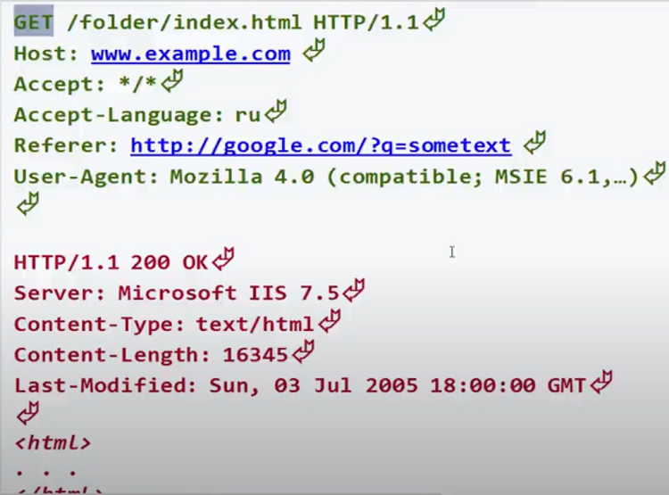

Проверка isset(), устанавливает лежит ли в переменной хоть что то кроме null. Эта функция вернёт false только тогда когда переменной нет и когда в ней null.
Проверка на пустоту - empty().
Насильно приводим к другому типу:
При явном преобразрвании строки в число вот так - $str = (int)'word', получим 0, если в начале строки не будет цифр.
PHP в отличии от JS может самостоятельно привести сроку '3word' к числу 3 при мат. операции, а в JS нужно сначала parseInt('3word') сделать:
echo 3 + '5word'; // 8
echo 3 + '2.3'; // 3.3
При сравнении(==) разных типов php приводит оба операнда к числу. Оператор тождественного равенства === не выполняет приведения типов и сравнивает сначала то, что типы идентичны, например, целые числа, а затем сравнивает их значения.
Также заметил что в php при вычислении 3 && 4 вернётся логическое значение true, а в js вернётся 4
В отличии от js в php есть разница между этими кавычками. Двойные кавычки видят внутри себя переменную, а одинарные нет. В двойных кавычках если подставляем переменную, то лучше тогда её подставлять в {}:
$lang = 'php';
$str = 'Я изучаю $lang'; // 'Я изучаю $lang'
$str = "Я изучаю $lang"; // 'Я изучаю php'
$str = "Я изучаю {$lang}"; // 'Я изучаю php'(правельней всего)
Есть такая дериктива как HEREDOC, в неё можно записывать строки с разными кавычками, переносами, табуляциями и он всё поймёт, но у этого способа есть строгое правило написания синтаксиса:
$lang['language'] = 'php';
$str = <<<HEREDOC
"Я изучаю {$lang['language']}"
HEREDOC;
Также php не прочитает в "" константу, а только переменную.
Например есть функция, которая при отработке выводит кусок html кода и этот код отдаётся браузеру и браузер уже выводит на экран результат. Но в функции есть слабое место, которое может вызвать ошибку и эта ошибка отдатся браузеру и он её выведет на экран, если включены ошибки,и по проанализировав эту ошибку можно наненсти вред сайту. Чтобы такого не случилось, нужно сразу во время разработки стараться выявлять такие слабые места и обрабатывать их, чтобы ошибка не выводилась, а выводилась то сообщение, которое мы укажем. Ну например такая функция:
<?php
function drawMenu($menu, $vertical = true){
if(!is_array($menu)) return false;
...
...
return true;
}
if(!drawMenu($menu)) echo "Извините, произошла ошибка";
Как видно из кода выше, слабым местом было то, что в функцию может прийти не массив и тогда php выкинет ошибку, но мы перехватываем инициативу и ещё до возможной ошибки проверяем на массив переменную и если там не массив прекращаем работу функции и выдаём своё сообщение об ошибке. Вот примерно так нужно отлавливать сразу слабые места и обрабатывать их. Но есть одно НО, выдать сообщение мы то выдали, а нам как разработчику не понятно что была за ошибка. Это когда мы обрабатывали тот кусок кода, то помнили что там за проблема, а если это сообщение выскочит через время, то уже и не помним что там случилось. Для таких случаев нужно создать свою пользовательскую функцию перехватчик ошибок, например myError. Эту функцию php должен как то видеть и знать, что ей нужно передать всё о произошедшей ошибке. Для этого существует такая встроенная функция как set_error_handler() и ей в качестве аргумента нужно передать нашу функцию обработчик ошибок. Вот примерно как должно это выглядеть:
<?php
function myError($errno, $errmsg, $file, $line){
echo $errmsg;
}
set_error_handler('myError');
function drawMenu($menu, $vertical = true){
foreach($menu as $val){
echo $val;
}
return true;
}
drawMenu('Не массив');
Теперь на экране мы увидим только сообщение об ошибке, без указания строки, пути к файлу и т.д. вот такое:

Вместо:

Ещё раз, что произошло. Я убрал обработку ошибки и передал в функцию не массив, чтобы цикл foreach выдал ошибку, но эта ошибка перехватывается нашей функцией myError и php передаёт в мою функцию аргументы в строгом порядке - номер ошибки, сообщение в чём проблема, путь до файла и номер строки где произошла ошибка. А вот уже внутри моей функции можнорешать что и где и когда вывести или залогировать в журнал.
Там ещё есть про ошибки, есть ещё функция trigger_error(), error_log правда уже немного не понял о чём он рассказывал. Если что это Уроввень 1 День3 начиная где то с 02:00:00. Там уже больше он рассказывал как логировать ошибки.
Функции для работы с переменными
Псевдоконстанты. Почему псевдо, потому что изменяются. Подходят для отладки кода.
Константы. Это встроенные константы в сам php.
Функции для работы со строками
В отличии от js в php работа в строках идёт не с символами, а с байтами.
Получение символа строки, длина строки:
$str = 'word';
$str2 = 'слово';
echo $str{2}; // r
echo $str[2]; // r, через [] тоже можно получить
echo $str2{0}; // ??, не понимает
echo strlen($str); // 4
echo strlen($str2); // 10, потому что русские символы
echo mb_strlen($str2); // 5, теперь нормально
echo $str{strlen($str) - 1}; // d
Склеивать строки можно 2мя спсобами:
$str = 'word';
$str2 = 'of';
$str3 = 'tanks';
echo $str . ' ' . $str2 . ' ' . $str3; //word of tanks
echo "{$str $str2 $str3}";// word of tanks
Функции для работы с массивами
Масивы можно объявить 2мя спсобами. $arr = [] и $arr = array(). Массивы есть с упорядоченной коллекцией - $arr = [ 'word', 12, true ] и есть ассоциативные массивы - $arr = ['name' => 'Jhon', 'age' => 23]. Обращение идёт через [] и через {} как и в строках(чтобы не было путаницы к массиву обращаются через [], а к строкам через {}), например $arr[0] - 'word' или $arr['name'] - 'Jhon'. Присвоить новый элемент в конец массива можно так: $arr[] = 23. В php нумерацию элементов можно назначить самому: $arr = [ 2 => 'word', 23, true]. Всё теперь порядок начнётся с 2, а не с 0 как по умолчанию, и пойдёт дальше увеличиваясь на 1. Также в отличии от js можно присвоить 4 элемент вот так - $arr[99] = 45 и php не сделает кучу пустых значчений между 4 индексом и 99, просто сразу за 4 индексом пойдёт 99.
Пустой массив при приведении к булеву типу есть false
$array = array('имя', 'почта', 'телефон');
$comma_separated = implode(",", $array);
echo $comma_separated; // имя,почта,телефон
$pizza = "кусок1 кусок2 кусок3";
$pieces = explode(" ", $pizza);
print_r($pieces); // ["кусок1", "кусок2", "кусок3"]
$user = [
'name' => 'Jhon',
'login' => 'root',
'password' => '1234'
]
echo serialize($user); // a:3:{s:4:"name";s:4:"Jhon";s:5:"login";s:4:"root";s:8:"password";s:4:"1234";}
$user = [
'name' => 'Jhon',
'login' => 'root',
'password' => '1234'
]
echo serialize($user); // a:3:{s:4:"name";s:4:"Jhon";s:5:"login";s:4:"root";s:8:"password";s:4:"1234";}
echo base64_encode(serialize($user));//YTozOntzOjQ6Im5hbWUiO3M6NDoiSmhvbiI7czo1OiJsb2dpbiI7czo0OiJyb290IjtzOjg6InBhc3N3b3JkIjtzOjQ6IjEyMzQiO30=
echo strftime('Сегодня %d-%m-%Y');//Сегодня 23-03-2021
echo strftime('Сегодня %d-%B-%Y');//Сегодня 23-March-2021
//Чтобы месяц был по русски, пишем так:
setlocale(LC_ALL, "russian");
$day = strftime('%d');
$mon = strftime('%B');
$mon = iconv('windows-1251', 'utf-8', $mon);
$year = strftime('%Y');
echo $mon; // Март
Array
(
[seconds] => 39
[minutes] => 16
[hours] => 17
[mday] => 25
[wday] => 4
[mon] => 3
[year] => 2021
[yday] => 83
[weekday] => Thursday
[month] => March
[0] => 1616681799//метка времени
)
echo date("d-m-Y H:i:s");// 25-03-2021 17:30:38
echo date("d-m-Y H:i:s", timestamp);//выдаст текущую дату и время
function foo(){
echo func_num_args();//выведет кол-во принятых аргументов: 5
print_r(func_get_args());//выведет массив из полученных аргументов: [1, 2, 3, 4, 5]
echo func_get_arg(2);//выведет аргумент по индексу 2: 3
}
foo(1, 2, 3, 4, 5);
Как сказал Борисов из специалиста, то пока работает только на массив, говорил это в 2016 году:
function foo(array $param){
}
foo(1);//ошибка, нужен аргумент массив
foo([1, 2]);//всё правильно
function foo(callable $param){
$param();
}
//в функцию нужно передать то, что можно вызвать, например функцию, метод, класс
function bar(){}
foo(bar);
Цикл foreach ( $arr as $val ) {}, $arr - массив, $val значение св-ва массива.
Второй вариант foreach ( $arr as $key => $val ){}.
Ссылка в цикле foreach ( $arr as &$val ){} - теперь все операции с $val будут менять значения св-в в массиве, без этой ссылки значения останутся прежними.
Через файл .htaccess можно настраивать PHP. Например можно отключить директиву коротких кавычек, пишем такую строку php_flag short_open_tag off. Перезапустим сайт и посмотрим на инфу через функцию phpinfo(). На сайте увидим в столбце Local Value, что короткие кавычки теперь отключены. Если же изменить напрямую в файле php.ini эту настройку, то уже глобально отключится эта директива. Об этом говорится в видео специалиста Уровень 1, Урок 1 из 3, на 01:03:30. Эти видео у меня на компе в разделе php от специалиста.
Массив $GLOBALS почти то же самое что и в js window, хранит все переменные, константы, функции в себе:
<?php
$name = 'Mike';
$GLOBALS['name'] = 'Mike';
//эти две строки делают одно и тоже
Также в этом массиве лежат такие суперглобальные массивы как:
Нужно описать из видео специалиста уровень 1, урок 3 из 3, время 02:03:39
При echo true; выведится '1'. При echo false; выведится пустая строка ''. false при приведении к числу даст 0. true к числу даст 1
Если в функции мы хотим обратиться к глобальной переменной, то есть 3 способа:
<?php
function abc($name){
//код
..
..
..
//
global $name;
$name = '...';
}
Ещё один момент связан с со словом global это то, что global $name это ссылка на ту переменную, которая находится в глобальной области и поэтому если внутри функции удалить unset($name), то удалится ссылка, а переменная $name останется в глобальной области.
Только переменные можно передать по ссылке:
<?php
function abc(&$name){
...
}
abc('Mike');// Ошибка, нельзя передать просто строку
$name = 'Mike';
abc($name);//всё передастся
Как изменить элементы массива:
<?php
$arr = [1, 2, 3];
foreach($arr as $v){
$v *= 10;
}
print_r($arr);//так и останется массив [1, 2, 3]
//как надо ---------------
$arr = [1, 2, 3];
foreach($arr as &$v){
$v *= 10;
}
print_r($arr);//[10, 20, 30]
Ещё способы применения ссылки:
<?php
function abc($a, &$b){
if($a){
return true;
}else{
$b = 'Сообщение об ошибке';
return false;
}
}
abc(10, $err);
//передав такие аргументы, вернётся true
abc(0, $err);
//передав 0 вернётся false, а в переменнную $err запишется сообщение об ошибке
Вот так можно сделать счётчик в php:
<?php
function abc(){
static $x = 0;
echo $x++;
}
abc();
abc();
abc();
//выведет 012
Протокол транспортировки гипертекста. уровень 1, урок 3 из 3, время 02:36:15
Так примерно выглядит форма для отправки данных на сервер:
<form action="handler.php" method="get">
Логин:
<input type="text" name="login">
Пароль:
<input type="password" name="pass">
<input type="submit">
</form>
После нажатия на кнопку с типом submit браузер соберёт такую строку для отправки:
GET /handler.php?login=Mike&pass=1234 HTTP/1.1
Всё что написано после ? и до HTTP называется строка запроса(QUERY_STRING) и лежит она в $_SERVER['QUERY_STRING'].
Но посылать метом GET, если есть пароли, не безопасно. Поэтому посылают методом POST, для этого в форме надо в атрибуте method указать 'post'. Тепрь браузер соберёт немного по другому запрос:
POST /handler.php HTTP/1.1
...
Referer: http://example.com/page-with-form.html
Content-Type: application/x-www-form-urlencoded
Content-Length: 20
login=Mike&pass=1234
При методе post заголовок Referer всегда посылается, так как он содержит адрес, кто именно послал форму. Также передаётся Content-Type и Content-Length.
После того как отправлен запрос по HTTP сервер вызывает указанный обработчик на исполнение и в этом обработчике надо как то принять данные посланные браузером и формой. Php уже подготовил для нас эти данные и распихал их по суперглобальным массивам $_GET, $_POST или $_REQUEST. Если данные были посланы методом GET, то и получаем их в массиве $_GET или $_REQUEST. Если посланы методом POST, то получаем в $_POST или $_REQUEST. Допустим что форма послала методом POST, то и получить наши инпуты можно так:
<?php
$login = $_POST['login'];
$password = $_POST['pass'];
Но так никогда не надо принимать данные пришедшие извне. Всегда надо их хотя бы минимально обрабатывать, потму что могут прислать что угодно и всё сломается. Вот минимальная обработка данных:
$login = trim(strip_tags($_POST['login']));
$password = trim(strip_tags($_POST['pass']));
$age = abs((int)$_POST['age']);//либо 0 либо положительное число получим